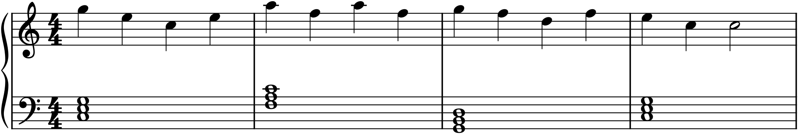
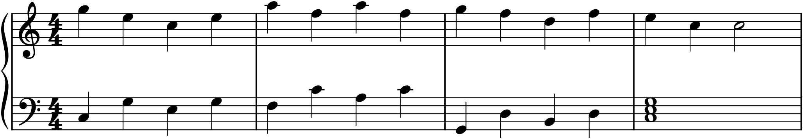
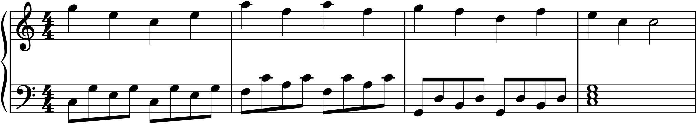

A chord progression is not yet music — it is a plan for music. Between “the harmony is C, then F, then G, then C” and an actual sound lies a decision the chord symbols do not make for you: how are the chords played? All together, or one note at a time? On every beat, or held? High, or low? These choices are the accompaniment, and they matter enormously, because the very same melody over the very same chords becomes a hymn, a lullaby, or a galloping dance depending only on the pattern the accompaniment plays. This chapter turns the chord grid into texture — and the three figures below all use the identical melody and harmony, so that the only thing that changes is the accompaniment, and you can hear how much that alone does.
21.1Block chords
The simplest accompaniment plays each chord as a block — all its notes struck together — held or repeated in rhythm beneath the melody. This is the texture of a hymn, a chorale, much of the four-part writing of Chapter 14: solid, direct, homophonic, the harmony stated plainly.

Block chords, as in Figure 21.1, are never wrong — they state the harmony with total clarity — but they can be static, since nothing in the accompaniment moves. Repeating the block in a rhythm (steady quarters, or an off-beat pulse) adds life; but for real motion, the accompaniment needs to break the chord apart.
21.2Arpeggiation
Arpeggiation — from the Italian for “harp” — plays a chord’s notes one after another instead of together, spreading it out in time. The harmony is exactly the same; it is simply unfurled rather than struck, which turns a static block into flowing motion. Arpeggiated accompaniments are gentle, liquid, and sustaining — the texture of countless slow movements, nocturnes, and ballads.

Compare Figure 21.2 with the block chords: same notes, same progression, same melody — yet it breathes, because the broken chord keeps something always sounding and moving. This is the single most useful accompaniment texture to have in hand, and it comes in endless varieties depending on the order and rhythm in which you unfurl the notes.
21.3The Alberti bass
One arpeggiation pattern is so characteristic of an entire era that it has its own name: the Alberti bass, after the composer Domenico Alberti. It breaks a three-note chord into a steady stream in a fixed order — lowest, highest, middle, highest — repeated as a gentle murmur under the melody. It is the unmistakable sound of Classical-era keyboard music; open almost any Mozart or early Beethoven sonata and you will find it.

The Alberti bass in Figure 21.3 shows how a specific, named pattern gives music a whole stylistic flavour. Its even, unobtrusive motion keeps the harmony present and the rhythm flowing without ever competing with the melody — which is exactly what a good accompaniment should do.
21.4Other patterns
Block, broken, and Alberti are three points in a large field. A few more worth knowing:
- The waltz “oom-pah-pah” — in 3/4, a low bass note on beat one followed by chords on beats two and three. The engine of every waltz and much folk and popular music.
- Repeated chords — a block chord struck in a steady rhythm (even eighths, say), giving pulse and drive without breaking the harmony apart.
- Broken octaves and tremolo — the bass alternating between a note and its octave, or shimmering rapidly, for energy or tension.
- Sustained tones and pedal points — a held note or drone under changing harmony (Chapter 16), for stillness or suspense.
Each is a different way of answering the same question — how to deploy the chords in time and register — and a composer collects them the way a painter collects brushstrokes.
21.5Choosing an accompaniment
The choice among these is not arbitrary; it is where you set the character of a passage. A few principles guide it. Match the texture to the mood — block chords for weight and solemnity, arpeggios for flow and tenderness, Alberti for Classical lightness, oom-pah for dance. Complement the melody rhythmically — when the melody is still, let the accompaniment move; when the melody is busy, keep the accompaniment simple, so the two do not collide. And mind the register — keep the accompaniment mostly below the melody, and beware the muddy low region where closely spaced chords turn to mush (a subject Part 6 takes up). The accompaniment’s job is to support and colour the melody, never to fight it; the best accompaniments are the ones a listener feels without especially noticing.
These are keyboard textures, described at the piano because that is where a composer most naturally thinks them (Chapter 27 returns to writing for piano in earnest). But the ideas — block versus broken, the rhythmic relationship to the melody, the care with register — transfer directly to writing for ensembles and orchestra in Parts 5 through 7, where the same choices are made with different instruments instead of two hands.
In MuseScore
A grand-staff (piano) score is the natural place to try accompaniment patterns: melody in the top staff, accompaniment in the bottom.
- Start a Piano score (two staves). Enter your melody in the treble staff (Chapter 20).
- In the bass staff, enter the accompaniment. For block chords, enter a root and stack the other chord tones with Shift+letter (Chapter 11). For arpeggios and the Alberti bass, enter the chord tones as separate notes in the pattern’s order and rhythm — for Alberti, the low–high–middle–high figure in eighths.
- The fastest way to fill many bars is to enter one bar of the pattern, then copy and paste it and adjust the pitches to each new chord (↑/↓) — the accompaniment’s shape stays, only its notes change with the harmony.
- Play melody and accompaniment together, and audition different patterns under the same tune by rewriting just the bass staff.
Try it: enter the melody from these figures once, then write the three accompaniments beneath it in turn — block chords, then the broken-chord arpeggio, then the Alberti bass — playing each. Same tune, same chords, three completely different pieces of music. That transformation, done entirely in the left hand, is the power of accompaniment.